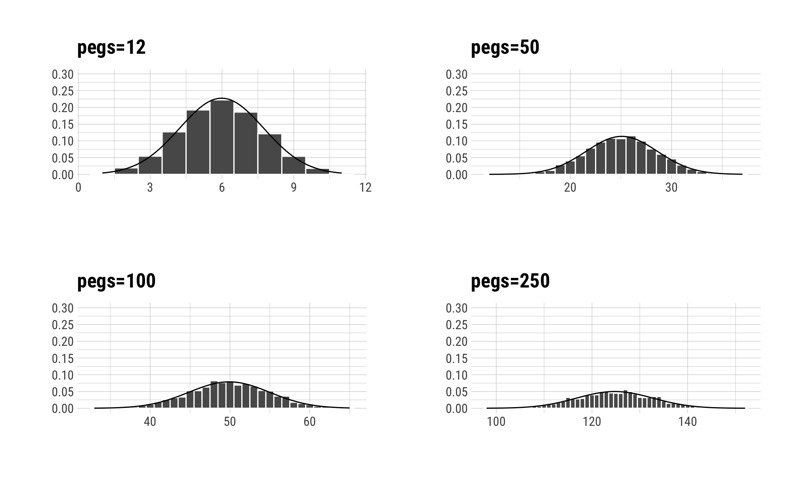

library(tidyverse)
library(hrbrthemes)
set.seed(12)
df <- rbinom(3000, 12, 0.5)
df %>%
data.frame() %>%
ggplot(aes(.)) +
geom_histogram(aes(., stat(density)), binwidth = 1, color="white") +
stat_function(fun=dnorm, color="black", args=list(mean=mean(df), sd=sd(df))) +
scale_y_continuous(limits=c(0, 0.25), breaks = seq(0, 0.25, 0.05)) +
labs(title="Poor Man's Galton Board") +
theme_ipsum_rc()Poor Man’s Galton Board
Some of you might have seen a device called the “Galton Board” (also called the bean machine or quincunx) on social media, or more correctly, its desktop version by Four Pines Publishing. It got popular for a brief moment several months ago. Even Michael from Vsauce posted a video on it:
The device demonstrates central limit theorem, specifically how binomial distribution approximates to normal distribution. As you can see in the video, there are pegs on the board arranged in a triangular shape. You drop a single bean, the bean hits the peg and falls left or right with some probability (\(p\)). Since we assume that the device is constructed well (i.e., unbiased), we expect the bean goes both sides with equal probability, \(p=1-p=q=0.5\). This step is repeated for each row of pegs and the bean ends up in a (corresponding, rectangular) bin. If the probability of bouncing right is \(p\) (in our case, \(0.5\)), the number of rows is \(N\), and the number of times the bean bounces to right is \(n\), then the probability of the bean ending up in the \(n\)th bin from left is,
\[\left( \begin{array}{c} N \\ n \end{array}\right)=p^nq^{N-n},\]
which is probability mass function of a binomial distribution. Here is the catch: according to de Moivre-Laplace theorem (a special case of CLT), under certain conditions, this binomial distribution will approximate to the probability density function of a normal distribution with mean, \(np\) and variance \(npq\). In this case, if the number of rows (of pegs) and beans are large enough, the distribution would approximate to normal distribution, as the small Galton board (with 3000 beads and 12(?) rows of pegs) demonstrates.
I really like this kind of small devices, but I am not willing to pay $39.95 (on Amazon). And, although the pleasure of watching the beans is missing, I can see the approximation at work using R:
Moreover, I can change the probability of bouncing to left or right, number of beans, and number of pegs (hence, bins) to see whether approximation works or not. (I also overlay a normal curve on histograms using sample mean and standard deviation.)
Tilting the Board
It is not hard to guess what would happen if I tilt the board to one side or the other. This will increase the probability of bouncing to left (or right) and we will end up with a skewed distribution.
Decreasing the Number of Beans
What would happen if I decrease the number of beans? On the left corner, we have the original board with 3000 beans and 12 pegs. Keeping the number of pegs constant, I decrease the number of beans to 1000, 500, and 100. I would say that the distribution of 1000 beans approximate the normal distribution quite well. But it is not the case for the distributions of 500 and 100 beans. One can see some skew, especially in the case of 100 beans.
Increasing the Number of pegs
And if I increase the number of pegs (hence, the number of bins), the beans will spread more and more, and the distributions become platykurtic (see the change on x axis labels).

There is no way for us to know where a single bean would end up. But under certain conditions, it is possible to know the distribution of thousands of beans. This is what Galton1 (1889) called “Order in Apparent Chaos” (p.66) 2:
1 Although he is an important figure in the history of statistics, nowadays Galton is criticized for his eugenics and “scientific racism.”
2 Natural Inheritance is available here as PDF.
I know of scarcely anything so apt to impress the imagination as the wonderful form of cosmic order expressed by the “Law of Frequency of Error.” The law would have been personified by the Greeks and deified, if they had known of it. It reigns with serenity and in complete self-effacement amidst the wildest confusion. The huger the mob, and the greater the apparent anarchy, the more perfect is its sway. It is the supreme law of Unreason. Whenever a large sample of chaotic elements are taken in hand and marshalled in the order of their magnitude, an unsuspected and most beautiful form of regularity proves to have been latent all along.
Update 12 Dec, 2020:
There is a beautiful visualization of Galton Board on mikefc’s chipmunkcore repo:
References
Galton, Francis. 1889. Natural Inheritance. MacMillan.
Pedersen, Thomas Lin. 2017. Patchwork: The Composer of Ggplots. https://github.com/thomasp85/patchwork.
Rudis, Bob. 2019. Hrbrthemes: Additional Themes, Theme Components and Utilities for ’Ggplot2’. https://CRAN.R-project.org/package=hrbrthemes.
Wickham, Hadley. 2017. Tidyverse: Easily Install and Load the ’Tidyverse’. https://CRAN.R-project.org/package=tidyverse.
Citation
BibTeX citation:
@online{2019,
author = {, T.E.G.},
title = {Poor {Man’s} {Galton} {Board}},
pages = {undefined},
date = {2019-03-31},
langid = {en}
}
For attribution, please cite this work as:
T.E.G. 2019. “Poor Man’s Galton Board.” March 31, 2019.